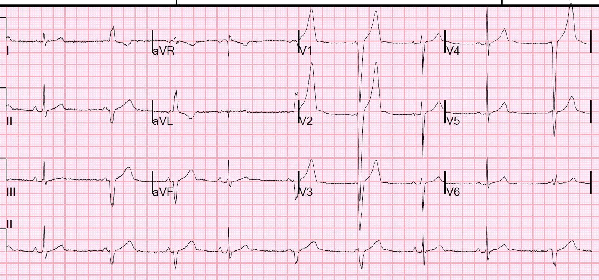
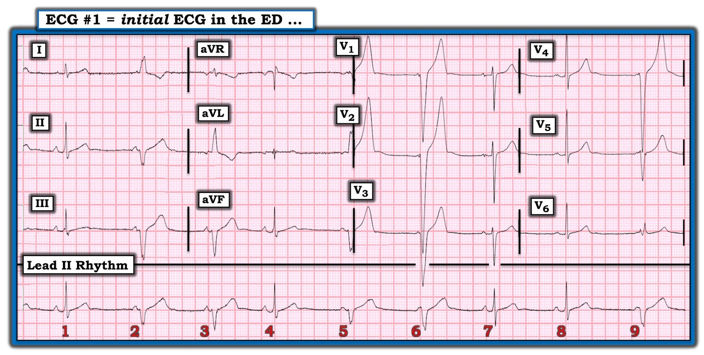
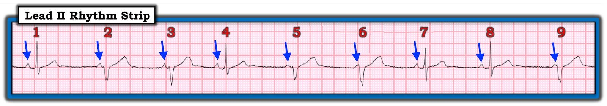
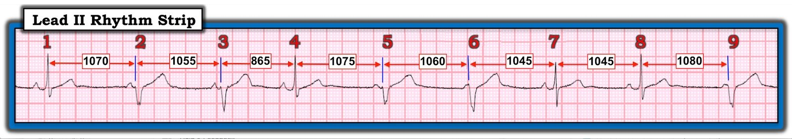
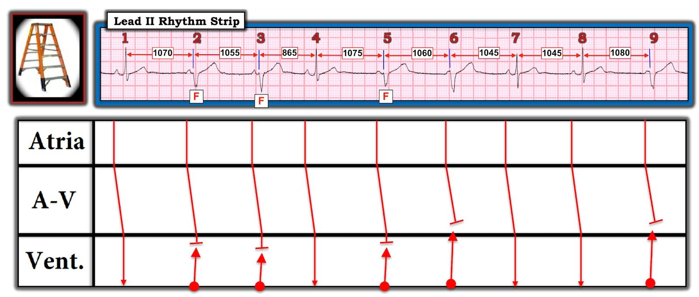
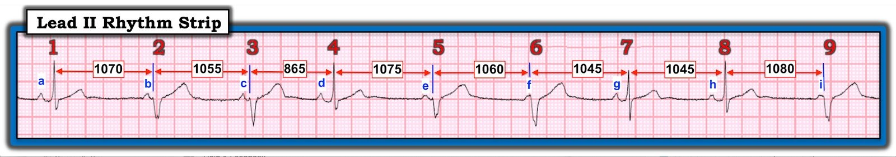

20/02/2020 — Những phức bộ rộng này là gì? Nếu lời giải thích chưa đủ rõ, giản đồ bậc thang sẽ giúp bạn hiểu.
Bản dịch tiếng Việt của bài "What are these wide complexes? If unclear by explanation, the laddergram helps to understand." – Dr. Smith’s ECG Blog. Giữ nguyên toàn bộ 8 hình ảnh của bản gốc.
Bệnh nhân nữ 18 tuổi đến khám vì đau ngực. Bệnh nhân kể có ho khạc đờm và đau đầu đã 4 ngày. Cô ghi nhận đau ngực sau xương ức dai dẳng, nặng hơn về đêm và làm cô thức giấc. Cô cũng có đau bụng từng lúc, mô tả như cảm giác “thắt chặt”.


Không.
Đây là nhịp chậm xoang kèm nhịp thoát thất phải hơi gia tốc, đến mức đôi khi:
1. nhát xoang được dẫn truyền trước khi có bất kỳ nhát thoát thất nào (nhát 7)
2. nhát thất bắt đầu gần như đúng cùng lúc với sóng P, và do đó sóng P không được dẫn truyền (nhát 6 và 9)
3. nhát thất xảy ra rất sớm ngay sau sóng P đến mức sóng P không được dẫn truyền (nhát 2, 3, 5)
4. Nhát thất hỗn hợp ở các mức độ khác nhau với nhát được dẫn truyền (nhát 1, 3, 4, 8)
Đây là phân ly nhĩ thất (AV dissociation) (KHÔNG phải blốc AV).
Siêu âm tim tại giường của cô bình thường và troponin âm tính tại khoa cấp cứu (ED).
Xem phần bàn luận chi tiết của Dr. Grauer bên dưới để biết thêm.
Đây không phải bệnh lý, và không đáng lo ngại.
Nếu bạn gặp một bệnh nhân có nhịp như vậy, chỉ cần cho họ đi lại trong khi theo dõi trên monitor để làm tăng tần số xoang. Khi đó nút xoang sẽ chiếm quyền của nhịp thoát thất và điện tâm đồ sẽ trở về bình thường ở tần số nhanh hơn. Nếu không như vậy, lúc đó mới có vấn đề.
Bệnh nhân được chuyển đi đo Holter và kết quả bình thường.

===================================
BÌNH LUẬN CỦA TÔI, bởi KEN GRAUER, MD (20/2/2020):
===================================
Có RẤT NHIỀU Điểm cần học tuyệt vời về điện tâm đồ trong ca này. Để giải thích cho rõ ràng — tôi đã đánh số các nhát bóp (Hình 1).
- Một CÂU NÓI cần Ghi nhớ — Như Rosenbaum đã nói, “Mọi nhịp tự trọng đều có ít nhất 3 cách giải thích khả dĩ”. Có một số chi tiết về rối loạn nhịp thú vị này mà tôi không chắc chắn. Dù vậy — tôi không nghĩ có ai có thể hoàn toàn chắc chắn về những chi tiết này nếu không theo dõi thêm.


TRƯỚC TIÊN — Tôi hoàn toàn đồng ý với diễn giải của Dr. Smith (đã nêu ở trên) — về những điểm lâm sàng quan trọng nhất. Tôi sẽ bổ sung thêm một vài suy nghĩ.
- Vì mục đích giảng dạy — tôi nghĩ cách tốt nhất để minh họa những Điểm cần học từ nhịp này là trả lời các câu hỏi lâm sàng sau đây. Hãy XEM LẠI MỘT LẦN NỮA nhịp ở Hình 1, và trả lời những câu hỏi sau:
CÂU HỎI Mức CƠ BẢN:
- Có phân ly nhĩ thất không?
- Khoảng P-P có hằng định không?
- Có blốc nhĩ thất không?
- Bệnh nhân là một phụ nữ 18 tuổi. AIVR (tức là nhịp tự thất gia tốc — Accelerated IdioVentricular Rhythm) có thường gặp ở nhóm tuổi này không?
- TẠI SAO các nhát thất lại xuất hiện ở Hình 1?
- Có nhát hỗn hợp (fusion beat) không?
- Bạn sẽ định danh nhịp ở Hình 1 NHƯ THẾ NÀO?
CÂU HỎI Mức NÂNG CAO: Những câu hỏi này Vượt ra ngoài phần cốt lõi. Câu trả lời của chúng không làm thay đổi xử trí bệnh nhân này — nhưng tôi nghĩ các câu trả lời có giá trị gợi mở, và giúp mài giũa kỹ năng đọc điện tâm đồ của bạn vượt lên trên mức cơ bản.
- Có phải mọi sóng P trong nhịp ở Hình 1 đều giống nhau?
- Đây có thực sự là nhịp xoang?
- NHỮNG nhát nào là nhát hỗn hợp ở Hình 1? Chúng ta có thực sự biết CÓ BAO NHIÊU nhát hỗn hợp không?
- TẠI SAO hình dạng QRS của các nhát được dẫn truyền (tức là các nhát #1,4,7,8) lại thay đổi?
GỢI Ý: Nếu bạn không dùng compa đo (calipers) — bạn sẽ không thể trả lời được nhiều câu hỏi ở trên …
Có phân ly nhĩ thất không? — Theo định nghĩa, có phân ly nhĩ thất thoáng qua ở Hình 1. Đó là vì, ít nhất trong một khoảng thời gian ngắn — có một số sóng P không liên quan đến các phức bộ QRS lân cận!
- Tôi đã đánh dấu các sóng P trên dải nhịp chuyển đạo II dài ở Hình 2 (mũi tên XANH DƯƠNG). Có vẻ như các nhát #1,4,7 và 8 được dẫn truyền — vì tất cả đều có sóng P đi trước với khoảng PR hằng định và bình thường.
- Vì khoảng PR đi trước các nhát #2,3,5,6 và 9 rõ ràng ngắn hơn nhiều so với khoảng PR của các nhát được dẫn truyền — điều này có nghĩa là các nhát #2,3,5,6 và 9 không được dẫn truyền bình thường. Do đó — có phân ly nhĩ thất đối với những nhát này!
- Để tìm hiểu thêm về Phân ly nhĩ thất — BẤM VÀO ĐÂY.


Khoảng P-P có hằng định không? — Quan sát kỹ các mũi tên XANH DƯƠNG ở Hình 2 sẽ cho bạn thấy khoảng P-P không hằng định. (NẾU còn nghi ngờ — compa đo sẽ xác nhận điều này cho bạn trong 2-3 giây).
- Ít nhất thì — có loạn nhịp xoang …
Có blốc nhĩ thất không? — Không có bằng chứng của blốc AV ở Hình 2. Đó là vì mặc dù một số sóng P trên dải nhịp này không được dẫn truyền — sóng P không bao giờ có cơ hội để dẫn truyền, vì khoảng PR đi trước các nhát #2,3,5,6 và 9 rõ ràng là quá ngắn để cho phép dẫn truyền bình thường.
- ĐIỂM THEN CHỐT (PEARL) #1 — Hãy nhớ rằng có 3 nguyên nhân tiềm tàng gây Phân ly nhĩ thất: i) phân ly nhĩ thất do một dạng blốc AV độ 2 hoặc độ 3 nào đó; ii) phân ly nhĩ thất do “Chiếm quyền” (usurpation) — trong đó sóng P tạm thời không được dẫn truyền vì một nhịp bộ nối hoặc nhịp thất gia tốc đã giành lấy chức năng tạo nhịp (vì nó nhanh hơn nhịp xoang nền); và/hoặc, iii) phân ly nhĩ thất do “Mặc định” (default) — trong đó một nhịp thoát bộ nối hoặc nhịp thoát thất tiếp quản theo kiểu “mặc định” (tức là do nút SA chậm lại).
Liệu AIVR có thường gặp ở người 18 tuổi không? — Các nhát thất ở Hình 2 là các nhát #2, 3, 5, 6 và 9. Tần số thoát tự thất thông thường ở người lớn là trong khoảng 20-40 nhịp/phút. Như Dr. Smith đã nêu — vì tần số của các nhát thất trong ca này hơi nhanh hơn mức đó (tức là ~55-60 nhịp/phút) — đây là một nhịp thất gia tốc nhẹ ( = AIVR).
- Để ôn nhanh về AIVR — BẤM VÀO ĐÂY. Các Bối cảnh Lâm sàng thường gặp mà AIVR có thể xuất hiện bao gồm: i) là nhịp trong lúc ngừng tim; ii) trong giai đoạn theo dõi nhồi máu cơ tim cấp (đặc biệt với nhồi máu cơ tim thành dưới); hoặc, iii) là rối loạn nhịp do tái tưới máu (sau tiêu sợi huyết, nong bóng cấp cứu, hoặc tái tưới máu tự phát). AIVR cũng có thể xảy ra ở bệnh nhân có bệnh mạch vành nền, bệnh cơ tim, và ngộ độc digoxin.
- ĐIỂM THEN CHỐT (PEARL) #2 — Trong những trường hợp hiếm, AIVR có thể xuất hiện từng lúc ở những người khỏe mạnh bình thường không có bệnh tim nền. Trong những trường hợp như vậy — nhịp này thường liên quan đến tăng trương lực phế vị. Nếu những người này không có triệu chứng — nhịp này nhìn chung lành tính, và không cần điều trị. Giả sử siêu âm tim bình thường ở người phụ nữ 18 tuổi trong ca này — và với điều kiện “đau ngực” mà bệnh nhân này kể không liên quan đến nhịp chúng ta thấy ở Hình 2 — thì sẽ không cần đánh giá thêm.


TẠI SAO các nhát thất lại xuất hiện? — Để giúp trả lời câu hỏi này — tôi đã đo cẩn thận các khoảng R-R trên dải nhịp chuyển đạo II dài (Hình 3).
- ĐIỂM THEN CHỐT (PEARL) #3 — Khi đối diện với một dải nhịp có phân ly nhĩ thất thoáng qua, và bạn không chắc (những) nhát nào có thể là nhát được dẫn truyền — Hãy tìm sự rút ngắn bất ngờ của khoảng R-R. Sự rút ngắn như vậy thường chỉ ra (những) nhát nào đang được dẫn truyền. Ngược lại — sự kéo dài của khoảng R-R thường cho bạn biết (những) nhát nào xuất phát từ một ổ khác.
- Nhát #4 ở Hình 3 có khoảng R-R đi trước ngắn nhất (865 mili giây) — và chúng ta biết nhát này được dẫn truyền.
- Các khoảng R-R ngắn tiếp theo ở Hình 3 đi trước các nhát #7 và 8 (1045 mili giây) — mà chúng ta biết cả hai đều được dẫn truyền bởi sóng P đi trước chúng.
- Lý do tất cả các nhát còn lại (tức là các nhát #2,3,5,6 và 9) ít nhất một phần là nhát thất — là vì tất cả đều có khoảng R-R đi trước dài hơn. Chính vì sự xuất hiện của sóng P bị trì hoãn — mà ổ thất hơi gia tốc “chán chờ đợi”, và phát ra một nhát thất.
Có nhát hỗn hợp không? — Để giúp trả lời câu hỏi này — tôi đã vẽ một giản đồ bậc thang (laddergram) của nhịp này (Hình 4).
- ĐIỂM THEN CHỐT (PEARL) #4 — Dù để thành thạo việc vẽ giản đồ bậc thang cần có thời gian (tôi đã mất đúng nghĩa là vài thập kỷ mới giỏi được kỹ năng này!) — học cách ĐỌC giản đồ bậc thang thì DỄ, và chỉ mất không quá vài phút. (NẾU bạn quan tâm tới một vài ví dụ dễ tiếp cận để bắt đầu — BẤM VÀO ĐÂY — và ĐÂY — và ĐÂY).
- Có sóng P đi trước mỗi nhát trong 9 nhát của dải nhịp chuyển đạo II dài ở Hình 4. Chẳng phải giờ đây nhìn vào Tầng Nhĩ (tầng trên cùng) thì dễ thấy hơn nhiều sự không đều của khoảng P-P hay sao?
- Các nhát #1,4,7 và 8 là nhát được dẫn truyền.
- Tôi đã vẽ các vòng tròn ĐỎ ở phần dưới cùng của giản đồ bậc thang để biểu thị nguồn gốc từ thất của các nhát #2,3,5,6 và 9.
- Phỏng đoán có cơ sở của tôi là các sóng P đi trước nhát #6 và 9 xuất hiện quá sát trước các nhát thất này nên không thể được dẫn truyền.
- Mặt khác — khoảng PR đi trước các nhát #2,3 và 5 dài hơn một chút so với khoảng PR đi trước các nhát #6 và 9 — nên có thể đã có đủ thời gian để một phần xung động từ phía trên được dẫn truyền xuống. Dù khó khẳng định — QRS của các nhát #2,3 và 5 có vẻ nhỏ hơn và hẹp hơn một chút so với QRS của các nhát #6 và 9 — vì vậy các nhát #2,3 và 5 có vẻ là nhát hỗn hợp (fusion beat) (được biểu diễn theo sơ đồ trong giản đồ bậc thang bằng sự dẫn truyền đồng thời vào Tầng Thất từ phía trên và từ phía dưới).
- Để tìm hiểu thêm về nhát hỗn hợp — BẤM VÀO ĐÂY.


ĐÂY là Nhịp gì? — Câu trả lời cho câu hỏi này dẫn chúng ta tới ĐIỂM THEN CHỐT (PEARL) #5: Thuật ngữ “Phân ly nhĩ thất” không bao giờ nên được dùng như một “chẩn đoán” tự thân. Thay vào đó — một diễn giải nhịp tối ưu sẽ chỉ ra rằng có phân ly nhĩ thất là do một hoặc hai trong số 3 nguyên nhân tiềm năng gây phân ly nhĩ thất đã bàn ở ĐIỂM THEN CHỐT #1 đang tác động.
- Vấn đề chính trong nhịp ở Hình 4 là nhịp chậm. Chính vì có nhịp chậm xoang và loạn nhịp xoang mà ta thấy phân ly nhĩ thất, với nhiều nhát xuất phát từ một ổ thất hơi gia tốc.
- Như vậy, nhịp này không phải là “phân ly nhĩ thất”. Thay vào đó — chúng ta thấy phân ly nhĩ thất do mặc định (default) của ổ tạo nhịp xoang, vốn chậm lại đủ để ổ thất hơi gia tốc phát ra vài nhát thất. LƯU Ý: Xét về mặt ngữ nghĩa — đây không phải là phân ly nhĩ thất do “mặc định” thuần túy — vì thay vì chỉ là một nhịp “thoát” thất đơn thuần — ổ thất này lại nhanh hơn tần số 20-40/phút của một nhịp thoát thất.
TRẢ LỜI cho các Câu hỏi Mức NÂNG CAO: Ở phần trước — tôi đã đặt ra các câu hỏi Vượt ra ngoài phần cốt lõi sau đây.
- Có phải mọi sóng P trong nhịp này đều giống nhau?
- Đây có thực sự là nhịp xoang không?
- NHỮNG nhát nào là nhát hỗn hợp trong nhịp này? Chúng ta có thực sự biết có BAO NHIÊU nhát hỗn hợp không?
- TẠI SAO hình dạng QRS của các nhát được dẫn truyền (tức là các nhát #1,4,7,8) lại thay đổi?


TRẢ LỜI CỦA TÔI:
- Tôi cho rằng hình dạng sóng P không giống nhau ở tất cả các sóng P trong Hình 5! Dù đúng là hình dạng sóng P luôn có chút biến đổi “tự nhiên” nhẹ — CHẲNG PHẢI BẠN CŨNG THẤY rằng các sóng P a,c,d và g rõ ràng nhọn hơn các sóng P e,f và i hay sao? (Tôi không chắc về sóng b, có vẻ mang hình dạng trung gian).
- NẾU còn nghi ngờ — hãy QUAY LẠI bản ghi 12 chuyển đạo ở Hình 1, và xem hình dạng sóng P ở cả 12 chuyển đạo. Tôi tin rằng có một số khác biệt tinh tế là thật.
- Lưu ý rằng các sóng P tròn hơn (tức là e,f và i) dường như đi sau một khoảng R-R hơi dài hơn. Về mặt lâm sàng — tôi nghi ngờ rằng thay vì loạn nhịp xoang, bệnh nhân 18 tuổi này nhiều khả năng có ổ tạo nhịp nhĩ lang thang (wandering atrial pacemaker) — với sự biến thiên rõ rệt của khoảng P-P (cũng như AIVR của cô ấy) đều là biểu hiện của trương lực phế vị nền tăng cao. Sự dịch chuyển vị trí ổ tạo nhịp nhĩ có thể đang xảy ra theo sự biến thiên liên tục của trương lực phế vị. Dù vậy — để biết chắc nhịp này có phải là ổ tạo nhịp lang thang hay không, chúng ta sẽ cần theo dõi trong thời gian dài hơn — và cần chắc chắn rằng mình thấy ít nhất 3 hình dạng sóng P khác nhau (Để tìm hiểu thêm về chẩn đoán trên điện tâm đồ của ổ tạo nhịp lang thang — BẤM VÀO ĐÂY).
- Lưu ý rằng trong Hình 5, chúng ta không bao giờ thấy một nhát thất nào mà không có sóng P đi trước. Do đó — chúng ta KHÔNG hề biết một nhát thất “thuần túy” trông như thế nào. Vì vậy, có thể ngay cả các nhát #6 và 9 cũng mang một mức độ hỗn hợp nhẹ (tức là chúng ta KHÔNG hề biết mình đang thấy bao nhiêu nhát hỗn hợp trong dải nhịp này).
- Cuối cùng — Lưu ý rằng sóng S của nhát được dẫn truyền sớm nhất (tức là nhát #4) rộng hơn một chút so với sóng S của các nhát được dẫn truyền #7 và 8. Tôi không nghĩ nhát #4 là nhát hỗn hợp — vì khoảng PR của nó giống hệt khoảng PR của các nhát được dẫn truyền khác, và chỉ có sóng S tận là trông hơi rộng hơn. Thay vào đó — việc nhát #4 xuất hiện sớm hơn nhiều khả năng đã dẫn tới một mức độ dẫn truyền lệch hướng kiểu blốc nhánh phải không hoàn toàn (RBBB).
ĐIỀU CỐT LÕI — Giả sử bệnh nhân 18 tuổi này không có bệnh tim cấu trúc nền — nhịp tim thú vị của cô ấy gần như chắc chắn là lành tính. Không có thay đổi ST-T cấp tính nào trên các nhát được dẫn truyền trong bản ghi 12 chuyển đạo của cô ấy.
- Tôi hy vọng rằng việc chú ý tới một số chi tiết “khó tính” nêu trên trong diễn giải các nhịp phức tạp sẽ mang lại những hiểu biết sâu sắc.
Xin CẢM ƠN Dr. Smith đã trình bày ca bệnh này!